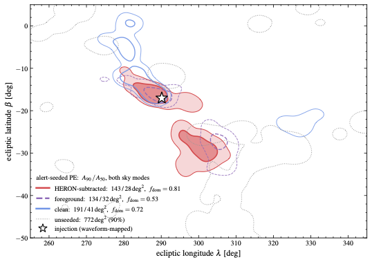
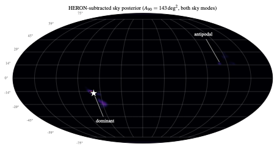
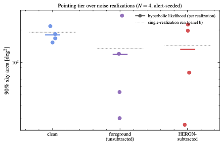
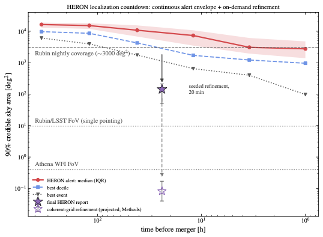
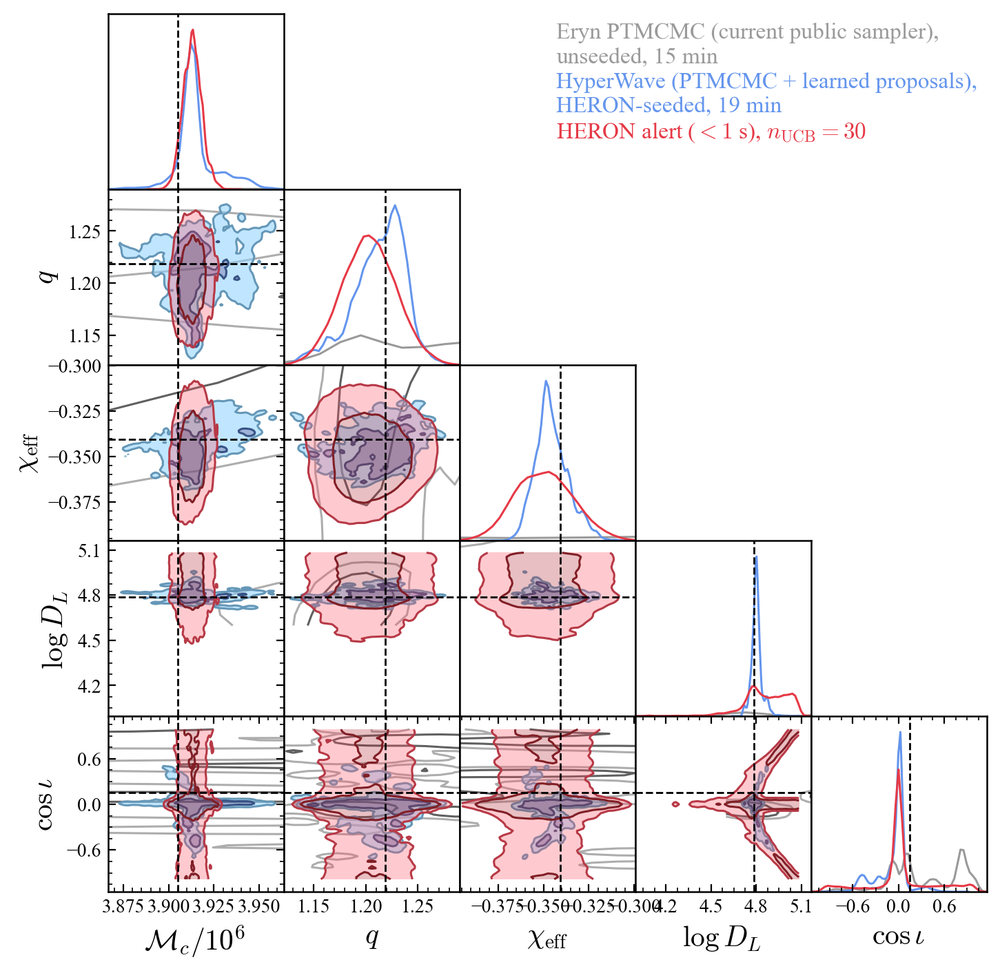
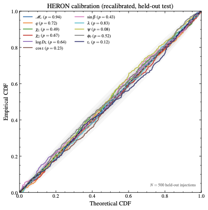
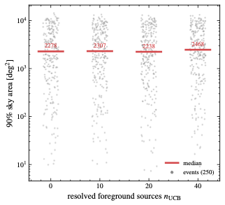

HERON converts a month-long simulated LISA data stream into a telescope-ready localization through four automated stages: sub-second full-band detection, foreground-robust amortized alert, closed-form galactic binary subtraction, and alert-seeded exact inference.
Tiled object detector sliding across whitened time-frequency spectrograms (0.1–4 mHz). Resolves UCB frequency windows and raises MBHB trigger.
Neural Spline Flow conditioned on detected UCB count (n_UCB ≤ 40) and sky pose via sky-GNPE. Evaluated on unsubtracted data without waiting for foreground removal.
Per-source Conv1D flow (12.7 ms) determines sharp frequency posterior (130 nHz). Closed-form rank-4 F-statistic linear projection removes resolved lines.
Alert-seeded parallel-tempered MCMC with HyperWave/Eryn and learned proposals on cleaned data. Resolves antipodal sky ambiguity and delivers telescope-ready pointing.
Because LISA observes continuously, all gravitational-wave sources are superimposed in time. Stage 1 operates on whitened short-time Fourier transform (STFT) spectrograms with 16384-length windows (~4 μHz resolution). A single YOLO detector trained on a normalized 110 μHz tile slides across the full 0.1–4 mHz LISA band with 50% overlap without retraining. It identifies UCB horizontal tracks and flags the broadband MBHB chirp track with a median confidence of 0.96.
Comparing HERON against standard Global Fit practice (PTMCMC) and concurrent amortized inference (Dingo-for-LISA).
| Capability / Metric | Standard PTMCMC (Exact Global Fit) | Dingo-for-LISA (Concurrent) | HERON (This Work) |
|---|---|---|---|
| Sky map available before merger? | No (forfeits pre-merger) | No (weakly constrained) | ✓ Yes (Continuous) |
| Continuous pre-merger countdown? | No | No | ✓ Yes (per downlink; <1 s analysis) |
| Correct-hemisphere selection at 1 month | — | — | ✓ Yes (f_dom: 0.53 → 0.81) |
| Resolved-UCB catalogue as by-product | Yes (after days/weeks) | No | ✓ Yes (~seconds) |
| Demonstrated Sky Localization | Exact (<1 deg², post-merger) | Weakly constrained (rigid approx.) | ✓ Localized (143 deg², 20 min) |
| Per-event runtime | ~66 hours (single MBHB) | < 1 min (with IS) | < 1 s Alert / 19 min Pointing |
| Galactic foreground handling | Clean noise reference / MCMC fit | Clean noise only | ✓ Robust (n_UCB-conditioned + F-stat) |
| Detector response model | Full frequency-dependent | Low-frequency rigid approximation | ✓ Full frequency-dependent + sky-GNPE |
| Statistical Calibration (P-P) | Yes | Yes (clean noise only) | ✓ Yes (with foreground; KS p=0.08–0.94) |
Zoom-in on ecliptic coordinates (λ, β) showing 50% & 90% credible regions. Notice how subtracting resolved UCBs sharpens the dominant mode and breaks the hemisphere degeneracy.

One month before merger, LISA data retains an intrinsic antipodal degeneracy (λ + π, -β). Without subtraction, the posterior probability is split 53% vs 47% between opposite hemispheres.

Evaluated using the heavy-tailed hyperbolic likelihood that tolerates non-Gaussian residual lines.

| Data Stream | Mean 90% Sky Area | Truth in 90% CR | Hyperbolic Likelihood Behavior |
|---|---|---|---|
| Clean Data | 180 ± 24 deg² | 4 / 4 (100%) | Recovers Gaussian limit on pure noise |
| Unsubtracted Foreground | 119 ± 94 deg² | Bounded (≤ 272 deg²) | Tolerates non-Gaussian lines (Gaussian fails) |
| HERON-Subtracted | 132 ± 82 deg² | Consistent | Captures residual leptokurtosis safely |
The scatter in 90% sky area is dominated by stochastic partition of posterior mass between the dominant and antipodal sky modes across noise draws.
Evolution of 90% credible sky area vs time before merger across the source population. Sub-second amortized inference allows re-analyzing the incoming data stream continuously at zero computational penalty.

Key physical thresholds for ground & space electromagnetic observatories:
Sangria Case 1 (SNR 357). Red: HERON Alert (<1s). Blue: HyperWave Pointing Tier (19 min). Grey: Unseeded Eryn (15 min unconverged). Dashed: True Injection.

Agreement between rapid amortized alert and exact MCMC on well-measured parameters.
| Parameter | True Injected | HERON Alert (68% CI) | HyperWave (68% CI) |
|---|---|---|---|
| Chirp Mass ℳc [10⁶ M⊙] | 3.905 | [3.908, 3.918] | [3.909, 3.926] |
| Mass Ratio q | 1.219 | [1.177, 1.229] | [1.188, 1.236] |
| Effective Spin χeff | -0.341 | [-0.365, -0.334] | [-0.354, -0.336] |
| Distance log₁₀(DL / Mpc) | 4.786 | [4.744, 5.020] | [4.775, 4.826] |
| Inclination cos ι | 0.150 | [-0.137, 0.378] | [-0.269, 0.024] |
| Merger Time Error Δtc | 24.0 h pre | ± 15 min | ± 4.5 min |
Kolmogorov-Smirnov p-values lie between 0.08 and 0.94 on all eleven 1D marginal posteriors.

90% sky area is flat across n_UCB ∈ {0, 10, 20, 40} resolved sources (medians 2278, 2307, 2238, 2468 deg²).

Accreting massive black-hole binaries merging in AGN disks generate rich electromagnetic signatures from radio to X-rays: minidisk sloshing, relativistic Doppler boosting, circumbinary cavity tidal shocks, and post-merger disk relaxation.
Strategy: Follows the continuous HERON countdown envelope. Begins wide-field optical tiling as soon as the envelope contracts below 3,000 deg² (final 24 hours). The 20-minute Stage 4 report (143 deg²) requires only ~15 pointings.
Strategy: Monitors the entire accessible sky continuously with sub-minute cadence. Provides immediate archival and real-time coverage for periodic optical flares, Doppler modulation, and precursor bursts from the initial alert.
Strategy: Narrow-field pointing instrument. Waits for the Stage 4 refined pointing report or the coherent-grid refinement (0.04–0.17 deg²), capturing the relativistic Fe Kα line shifts and accretion disk quenching.
HERON provides a unified command line interface and a Python SDK.
# 1. Download released neural weights (0.5 GB)
heron download
# 2. Check environment, CUDA waveforms, and weights
heron check
# 3. Run full 4-stage pipeline on Sangria Case-1
heron infer --case 1 --n-ucb 30 --out runs/case1from heron import Heron
# Load released weights
h = Heron.from_pretrained()
# Execute stages 1-3 (and export stage 4 hand-off)
r = h.run(case=1, n_ucb=30, seed=0, out="runs/case1")
print("Alert 90% sky:", r.summary["alert_sky90_calibrated_deg2"])
print("UCBs catalogued:", len(r.catalogue))
print("Hand-off files:", r.handoff)| Level | Scope | Requirements | Wall Time | Command |
|---|---|---|---|---|
| Level 0 | Redraw all figures & verify all paper numbers | CPU only (no GPU) | ~2 min | heron figures && pytest tests/test_products.py |
| Level 1 | Rerun inference and validations from weights | 1 GPU (CUDA) | ~4 hours | heron validate |
| Level 2 | Train all 3 networks from scratch | 1 GPU, 1.8 TB disk | ~10 days | heron train |
| Level 2 (Smoke) | End-to-end toy training verification | 1 GPU | 6–12 min | heron train --smoke |